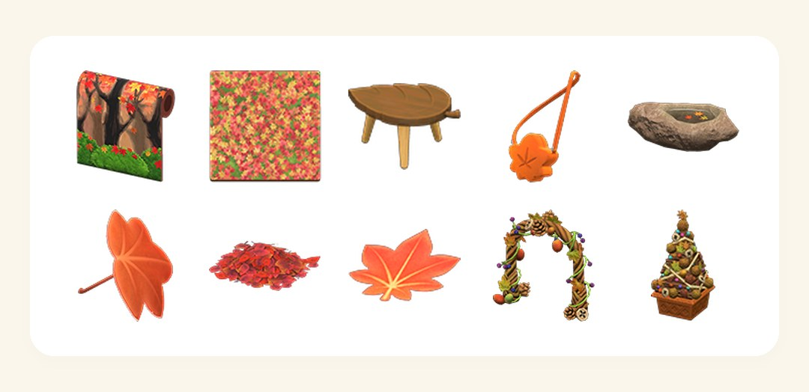

もみじの季節：11月16日〜25日、あみでもみじをすくおう
1年にたった10日間：もみじのすくい方、DIYレシピの入手先、家具10種類の素材を1つの表に
もみじの季節は、さくらの季節と同じく1年に10日間だけ。北半球は11月16日〜25日、南半球は5月16日〜25日です。この期間は赤いもみじが空中を舞い、あみを振ってすくえば、もみじのはっぱが手に入ります。
もみじのはっぱからは10種類のDIYが作れます。あかいおちば、もみじのかさ、いしのみずうけ～もみじ～、おおきなきのみのツリー……全部作るともみじのはっぱが57枚必要です。そのうち2つはどんぐりとまつぼっくりも使いますが、この時期はどんぐり・まつぼっくりの季節がまだ終わっていないので、いっしょに集められます。

秋の島。木の葉が赤く染まっています（画像：Nookipedia）

もみじのはっぱで作れるDIY（画像：Nook Circle 図鑑）
01どの10日間？
日付はゲーム内の時間です。南半球は北半球より半年遅れます。
| 半球 | 開始 | 終了 |
| 北半球 | 11月16日 | 11月25日 |
| 南半球 | 5月16日 | 5月25日 |
ゲームの1日は朝5時から始まるので、10日目の深夜から翌朝5時の前までは、まだもみじの季節です。
この10日間は、キノコの季節（北半球は11月、南半球は5月）とどんぐり・まつぼっくりの季節の中にあるので、3つの素材をいっしょに集められます。11月の第4木曜日のサンクスギビングも、年によってはこの10日間に入ります。
02もみじのすくい方
もみじのはっぱは空中を舞っています。ムシをつかまえるときと同じように、あみを持ってねらって振るだけです。1枚200ベルなので売るのはもったいなく、家具の素材に取っておきましょう。
もみじのはっぱはポケットの1枠に10枚までしか重ねられないので、すぐにポケットがいっぱいになります。しばらくすくったら家の収納にしまい、あきを作ってからまたすくいましょう。
ヒントもみじのはっぱは家の収納にしまえます。季節が終わる前に多めに集めてしまっておけば、季節が過ぎても作れます。この季節のDIYレシピを覚えきれなくても大丈夫。あとで覚えたときに取り出して使いましょう。
03DIYレシピの入手先
10日間で10種類を覚えなければならず、時間はぎりぎり。3つの入手先をすべて使いましょう。
いちばん大きいのはふうせんです。もみじの季節に飛んでくるふうせんを撃ち落とすと、この季節のDIYレシピが落ちてきます。この季節のレシピを全部覚えるまで出続けます。この期間は、ふうせんを見かけたら追いかけましょう。
次に初日の案内所。北半球は11月16日、南半球は5月16日に、たぬきちかしずえが「あかいおちば」のDIYレシピをくれます。もらえるのは初日だけです。
3つ目はかっぺいのボートツアーです。下で説明します。
逃してしまったら：かっぺいの船で取り戻す
桟橋のかっぺいは、1日1回、1,000マイルで海へ連れ出してくれます。ときどき季節が止まったままの島に着くことがあり、もみじの島もその1つで、季節の島はそれぞれ確率3%ほどです。その島ではもみじのはっぱがすくえ、どんぐりもゆすって取れて、浜辺のメッセージボトルにもみじのDIYレシピが入っていることもあります。
確率は高くないので、運だめし程度に考えておきましょう。また、自分の島でこの季節を一度経験していないと、その島には連れていってもらえません。ホテルの1つ目のVIPルームをコーディネートすると、かっぺいは1日にもう1回（ホテルチケット100枚）船を出してくれるようになり、当たるチャンスも少し増えます。
04DIYレシピ10種類の一覧
| DIYレシピ | 素材 |
| あかいおちば 季節の初日に案内所でもらえる | もみじのはっぱ3、ざっそう4 |
| こうようのかべ | もみじのはっぱ10、もくざい5、ざっそう5 |
| こうようのゆか | もみじのはっぱ10、ざっそう15 |
| もみじのラグ Ver.2.0で追加 | もみじのはっぱ6 |
| おちばスツール | もみじのはっぱ3、もくざい3 |
| いしのみずうけ～もみじ～ | いし10、もみじのはっぱ3 |
| きのみのアーチ | まつぼっくり4、どんぐり5、もみじのはっぱ5、きのえだ15 |
| おおきなきのみのツリー | まつぼっくり5、どんぐり4、もみじのはっぱ4、きのえだ8、ねんど4 |
| もみじのポシェット | もみじのはっぱ6 |
| もみじのかさ | もみじのはっぱ7 |
10種類を全部作ると、もみじのはっぱが57枚、ほかにざっそう24、きのえだ23、いし10、どんぐり9、まつぼっくり9、もくざい8、ねんど4が必要です。
ヒントきのみのアーチとおおきなきのみのツリーに使うどんぐりとまつぼっくりは、木をゆすって集めます（どんぐりはこうようじゅ、まつぼっくりはしんようじゅ）。どんぐり・まつぼっくりの季節は北半球なら12月10日まで、南半球なら6月10日までなので、もみじの季節が終わってもまだゆすれます。
05まず作りたいもの
あかいおちば：初日にもらえるレシピ。紅葉の落ち葉の山を地面に置く飾りで、もみじのはっぱ3枚で作れます。
こうようのかべ＋こうようのゆか：部屋が紅葉の林に変わります。どちらももみじのはっぱを10枚ずつ使い、この季節でいちばんもみじを食う2つです。
きのみのアーチ：横3マスのアーチで、きのみともみじがたっぷり。道の入り口に置くと映え、リメイクで色を変えることもできます。
もみじのかさ、もみじのポシェット：手に持ったり身につけたりする小物で、秋の写真撮影にぴったりです。
いしのみずうけ～もみじ～：水鉢にもみじが浮かんだ置き物で、いしが10個必要です。和風庭園によく合います。
06アップデートでの変化
もみじのラグのDIYレシピはVer.2.0で追加されました。かっぺいのボートツアーはVer.2.0で、ホテルの1つ目のVIPルームをコーディネートすると1日もう1回乗れる仕組みはVer.3.0で追加されました。
Nook Circle · App Store で「Nook Circle」を検索